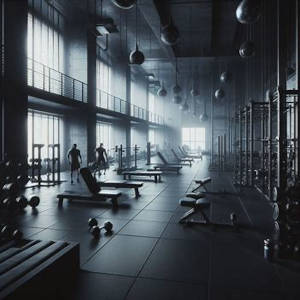

Rotinas de Treino®
Neste programa iremos montar a tabela de Treinos

Peito
- Supino inclinado | 3 series
- Supino reto | 3 series
- Paralela | 3 series
- Crucifixo | 4 series
- Cardio
Costas
- Puxada Alta | 3 series
- Puxada Alta unilateral | 2 series
- Remada | 3 series
- Remada baixa | 4 series
- Cross | 3 series
- Cardio
Perna
- Agachamento | 3 series
- Leg Press | 3 series
- Extensora | 4 series
- Flexora | 4 series
- Panturrilha | 5 series
- Sem Cardio
Ombro
- Desenvolvimento | 3 series
- Paralela | 4 series
- Elevação lateral | 3 series
- Elevação Frontal | 3 series
- Posterior de Ombro | 3 series
- Cardio
Braço
- Triceps Frances | 3 series
- Triceps Testa | 3 series
- Triceps Cordinha | 4 series
- Biceps Rosca Direta | 4 series
- Rosca Martelo | 3 series
- Rosca Scott | 3 series
- Sem Cardio
Site desenvolvido por: Tales Martins de Moraes™
Espero que isso atenda às suas necessidades! Se precisar de ajustes, estou à disposição.